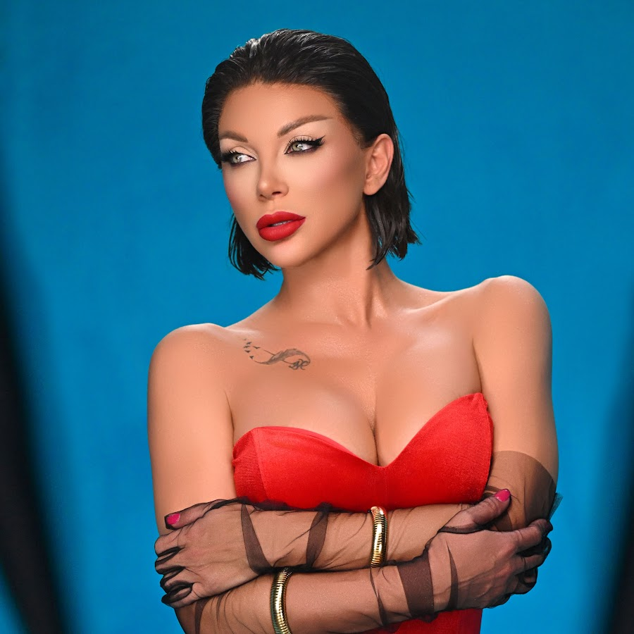
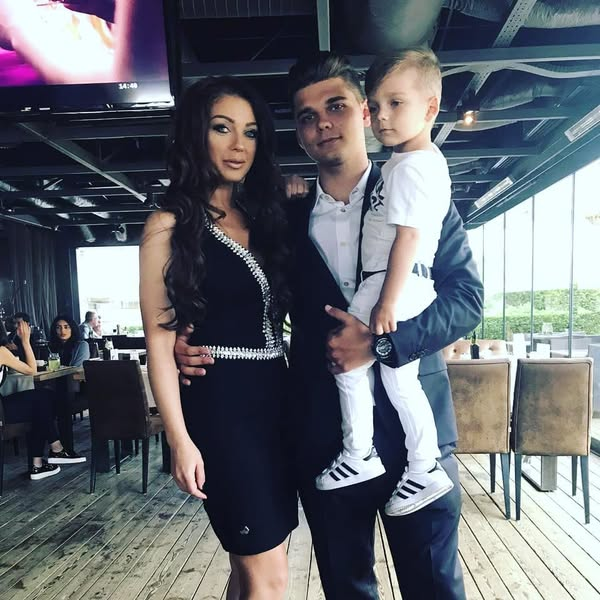

Емилия Иванова Цветкова, по-известна като Емануела, е българска попфолк певица.
Емануела е родена на 8 ноември 1981 година в София.Рожденото ѝ име е Емилия, но по-късно го заменя официално с артистичния си псевдоним Емануела.
Тъй като когато започва музикалната си кариера личното ѝ име е използвано от вече популярната попфолк певица Емилия, нейните издатели ѝ избират псевдонима Емануела, донякъде във връзка с еротичния филм „Емануела“.
Дебютният ѝ албум е издаден през 2008 година от „Ара Мюзик“ и носи заглавието на включената в него песен „Запознай я с мен“.
Запознай я с мен -
Емануела е известна не само с музикалните си успехи, но и с бурния си личен живот, който често е обект на медийно внимание. Тя има две деца от различни връзки и неведнъж е споделяла, че майчинството е една от най-важните ѝ роли в живота. Емануела има двама сина – Христо и Мити. Първородният ѝ син, Христо, е от връзката ѝ с бизнесмена Никола, а вторият ѝ син, Мити, е от връзката ѝ с Мартин Николов – Елвиса. Въпреки раздялите с бащите на децата си, певицата винаги е подчертавала, че те са най-голямото ѝ щастие и приоритет в живота. Тя често споделя моменти със синовете си в социалните мрежи, като показва колко силна е връзката им.Въпреки многобройните слухове и скандали около личния ѝ живот,певицата винаги е успявала да запази своята кариера и да поддържа интереса на феновете с нови проекти и хитове.

Освен музиката, Емануела проявява интерес и към киното и телевизията. Тя участва в риалити формати като "VIP Brother" и "Big Brother: Most Wanted", където се утвърждава като една от най-коментираните личности. Харизматичният ѝ характер и прямотата ѝ често предизвикват бурни реакции, но също така печелят симпатиите на зрителите. Независимо от предизвикателствата, с които се сблъсква през годините, Емануела продължава да бъде една от най-разпознаваемите и успешни звезди в българската поп-фолк сцена.
Емануела участва в популярното танцувално риалити шоу "Dancing Stars", където показа друга своя страна – отдадеността и дисциплината си извън музикалната сцена. Въпреки че първоначално много хора не очакваха тя да се справи добре, певицата успя да впечатли журито и зрителите със своята упоритост и напредък в танците. По време на участието си в "Dancing Stars", Емануела често се шегуваше със себе си, но в същото време влагаше много старание и хъс в репетициите, което ѝ спечели симпатиите на зрителите. Въпреки че конкуренцията беше силна, тя доказа, че с дисциплина и упоритост може да се справи дори с най-неочакваните предизвикателства.Участието ѝ в предаването допринесе за изграждането на още по-позитивен имидж и показа, че тя не се страхува да излезе от зоната си на комфорт и да опита нещо ново.